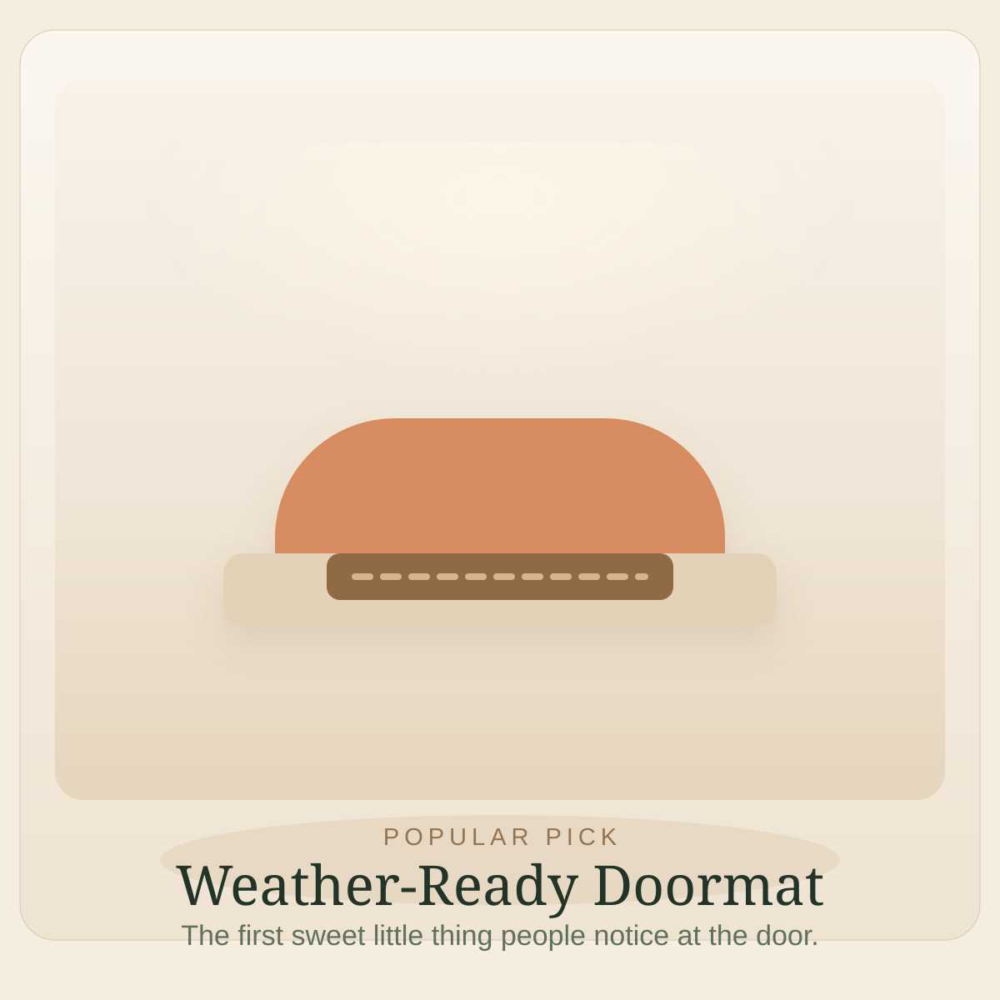

Image slot
Weather-ready coir mat
Easy Favorite
Popular Around the Neighborhood
Weather-ready coir mat
Front-door charm
A good mat makes the whole entry feel grounded, tidy, and a little more finished the second you walk up.
It is one of the easiest ways to make the front door feel intentional without adding any fuss.
A deep neutral mat almost always looks better longer than a trendy one.
Front doorEasyLow effort
Browse on Amazon